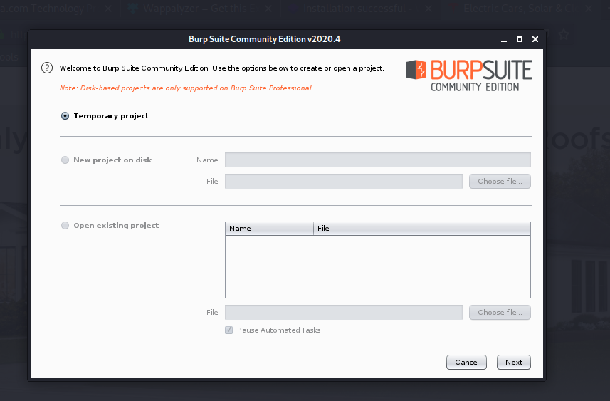

its a web proxy means it has ability to intersect traffic for us.

click next-start burp
then open firefox
go to preferences -settings-select manual proxy config-127.0.0.1-port 8080
later would do this with a tool called foxyproxy
go to https://burp
click on ca certificate and save the file
go to prefeernces-privacy and security -at end click on view certificates-click on import and import the ca certificate file
after doing this and going to tesla ki site it takes time to load as we are intercepting some of the traffic

then go in target tab and there when u click on any thing on tesla page see its stuff in target u will see in response tab so much information

zooming in :

we get to server name which is imp on assessment:
bt all thsi was still passive scannning for active scanning go to burpsuitepro